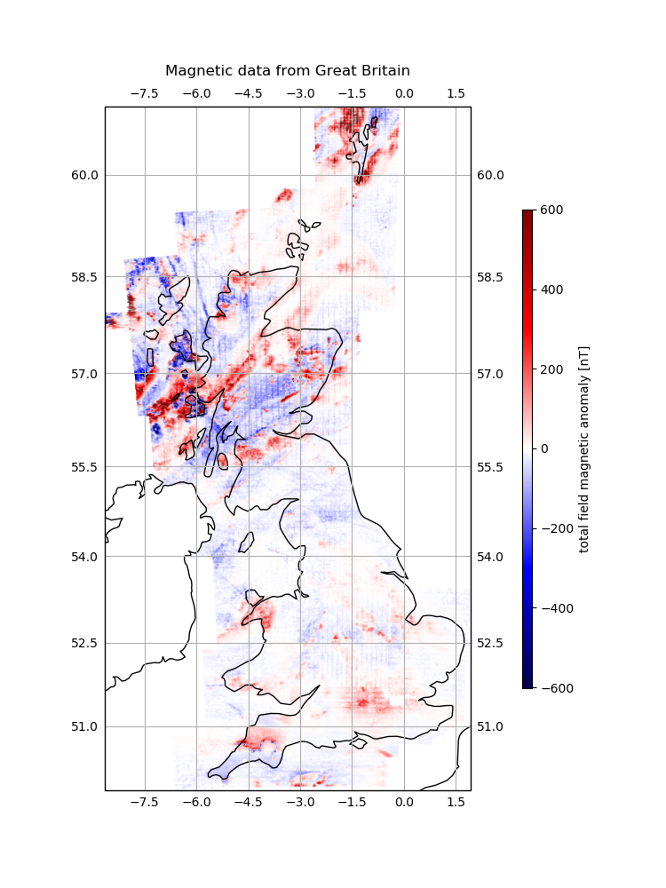

Note
Click here to download the full example code
Total Field Magnetic Anomaly from Great Britain¶
These data are a complete airborne survey of the entire Great Britain conducted between 1955 and 1965. The data are made available by the British Geological Survey (BGS) through their geophysical data portal.
License: Open Government License
The columns of the data table are longitude, latitude, total-field magnetic anomaly (nanoTesla), observation height relative to the WGS84 datum (in meters), survey area, and line number and line segment for each data point.
Latitude, longitude, and elevation data converted from original OSGB36 (epsg:27700) coordinate system to WGS84 (epsg:4326) using to_crs function in GeoPandas.
See the original data for more processing information.
If the file isn’t already in your data directory, it will be downloaded automatically.
Out:
survey_area line-number-segment ... altitude_m total_field_anomaly_nt
0 CA55_NORTH FL1-1 ... 842.0 62
1 CA55_NORTH FL1-1 ... 713.0 56
2 CA55_NORTH FL1-1 ... 364.0 30
3 CA55_NORTH FL1-1 ... 364.0 31
4 CA55_NORTH FL1-1 ... 370.0 44
... ... ... ... ... ...
541503 HG65 FL-3(TL10-24)-1 ... 1084.0 64
541504 HG65 FL-3(TL10-24)-1 ... 1098.0 74
541505 HG65 FL-3(TL10-24)-1 ... 1088.0 94
541506 HG65 FL-3(TL10-24)-1 ... 1077.0 114
541507 HG65 FL-3(TL10-24)-1 ... 1064.0 120
[541508 rows x 6 columns]
/home/travis/build/fatiando/harmonica/data/examples/britain_magnetic.py:63: UserWarning: Tight layout not applied. The left and right margins cannot be made large enough to accommodate all axes decorations.
plt.tight_layout()
import matplotlib.pyplot as plt
import cartopy.crs as ccrs
import verde as vd
import harmonica as hm
import numpy as np
# Fetch the data in a pandas.DataFrame
data = hm.datasets.fetch_britain_magnetic()
print(data)
# Plot the observations in a Mercator map using Cartopy
fig = plt.figure(figsize=(7.5, 10))
ax = plt.axes(projection=ccrs.Mercator())
ax.set_title("Magnetic data from Great Britain", pad=25)
maxabs = np.percentile(data.total_field_anomaly_nt, 99)
tmp = ax.scatter(
data.longitude,
data.latitude,
c=data.total_field_anomaly_nt,
s=0.001,
cmap="seismic",
vmin=-maxabs,
vmax=maxabs,
transform=ccrs.PlateCarree(),
)
plt.colorbar(
tmp,
ax=ax,
label="total field magnetic anomaly [nT]",
orientation="vertical",
aspect=50,
shrink=0.7,
pad=0.1,
)
ax.set_extent(vd.get_region((data.longitude, data.latitude)))
ax.gridlines(draw_labels=True)
ax.coastlines(resolution="50m")
plt.tight_layout()
plt.show()
Total running time of the script: ( 0 minutes 7.316 seconds)